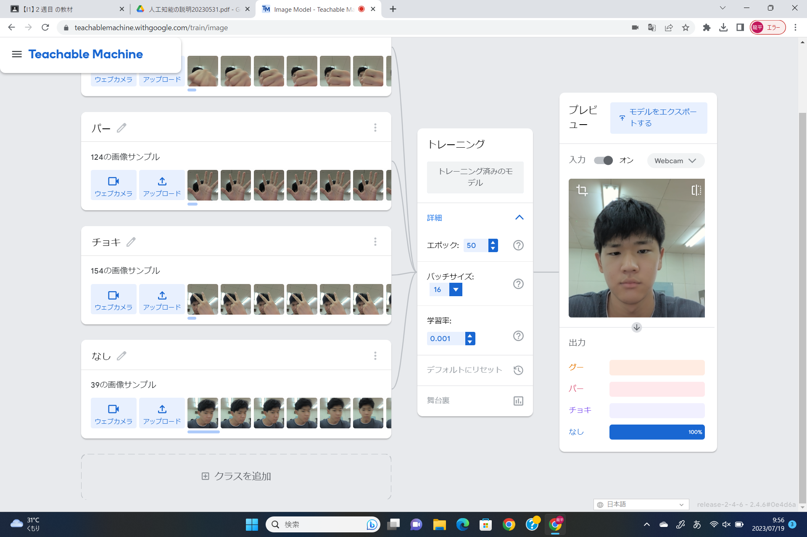
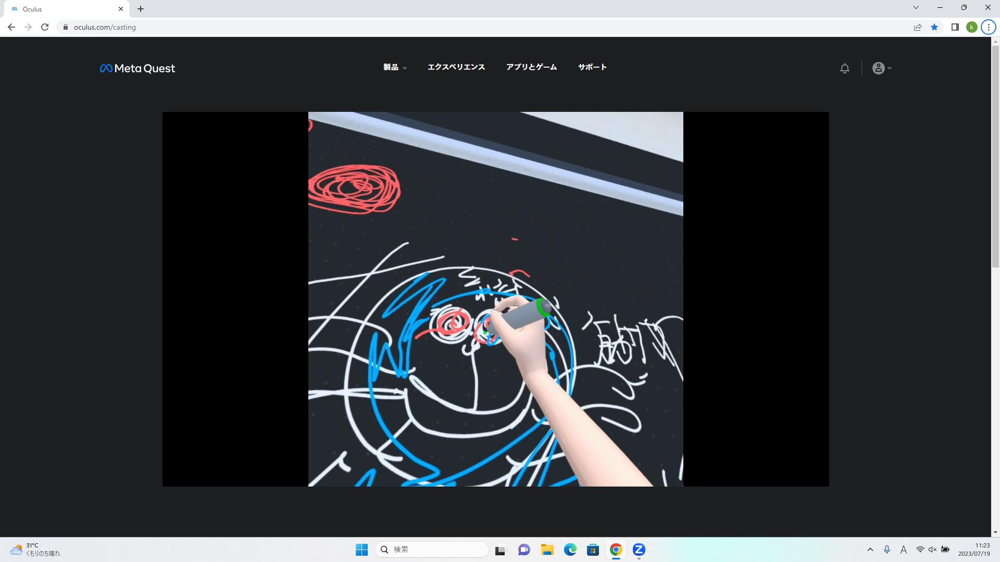

第2週目
2-1 １週目のレポートをHTMLで作る
１週目のレポート
1.内容
Scratchを使って、サイエンスアートとゲームを作成した。
また、Githubを使って自分のホームページを作成した。
2.感想
Scratch自体は、中学校で使ったことがあったが、変数などは使用したことがなかったので新しいことができて楽しかった。
幼少期からゲームの仕組みが気になっていたので、今回の実習でその仕組みに触れられ、また自分でゲームを作ることができ、とても楽しかった。
ゲームの難易度を、自分で変えることができるため、自分の納得できる良いゲームが作れたと感じた。
また、ホームページを自分で作成する機会が今までなかったため、自分でホームページを作ることは恐ろしく難しいと思っていたが
手順をしっかり踏めば意外と簡単に作成することができ、よりネットを身近に感じることができた。
これから機会があれば、自分のホームページを更新していきたいと思った
2-2 機械学習体験

1.内容
初めに資料を用いて、人工知能全般についての説明を受けた。
Teachable Machineで、カメラを使った画像を分類する機械学習の体験を行った。
2.感想
自分の顔や手を認識させるとき、高性能なカメラを使うと思っていたが、パソコンの内カメラを使い、一瞬で何枚もの写真をとっており、
案外力業なのだな、と、創造と大きく異なっていたためその違いが面白かった。
2-3 VR（バーチャルリアリティー：Virtual Reality）会議室の体験

1.内容
VRゴーグルを使い、WorkroomsでVR体験を行った
2.感想
Workroomsで体験者全員が一つの空間に集まって、絵をかくことがとても楽しかった。
また、声も反映されていたことに驚いた。